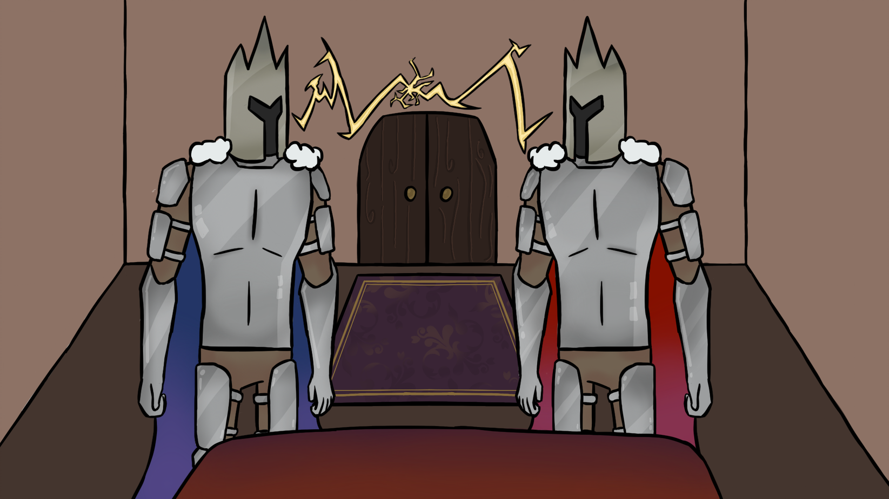
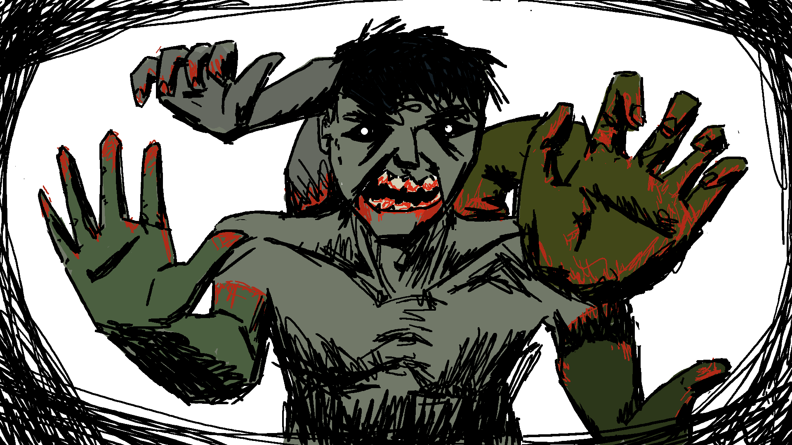

Polliword is a Physics Puzzle based game where you play as a Frog. You can use your tongue to collect words, which can alter the world. Use these words to finish puzzles, and platform your way to the end!
I was one of the designers on this game, as a designer I mainly did the sounds and work on finalizing the concept. There wasnt a lot of work because there were a lot of talented people on the team I spent most of the time helping the others with their tasks.
Clashing Crowns

Clashing Crowns is a Dungeon Crawler game where you race against your brother to get the family heirloom. This game is played with 2 people. You fight enemies, and open treasures to boost your chances of getting to the heirloom faster. Will you be victorious? Try it out now!
For my contribution to the game I helped with the design aspects. I made the website with a video, slideshow and all the information. I also did the level design and searched for a fitting song for the game.
The Limb Collector

In The Limb Collector you play as a patient that just woke up in a abandoned hospital. After waking up you find out your limbs are gone. When you go into the hallway you notice that there is a monster in the hospital. Are you brave enough to find your way out?
In this team I was also a designer. I did most of the sounds for the game, and did some of the level design. I also helped the others with finalizing the concept. I also made the website with the video and the information about the game.